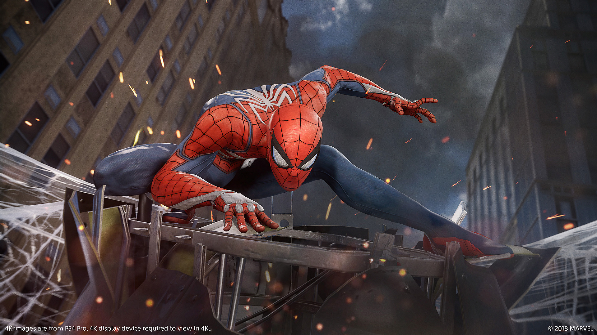

About Spider-Man
A bite from a spider somehow granted teenager Peter Parker its arachnid abilities and instead of using them for personal gain, he decided to help others with them. An orphan living with his aunt, May Parker, the boy chose to wear a mask while fighting crime so as not to burden her with his actions.
Spider-Man and his friends
Spider-Mans Characteristics
- He has Spidey senses
- He shoots web from his wrists
- His love Mary Jane
Spider-Mans Friends
Spiderman is a bit of a loner and has one friend called Harry Osbourne who ends up trying to kill him.
Click on the link below to read more about him